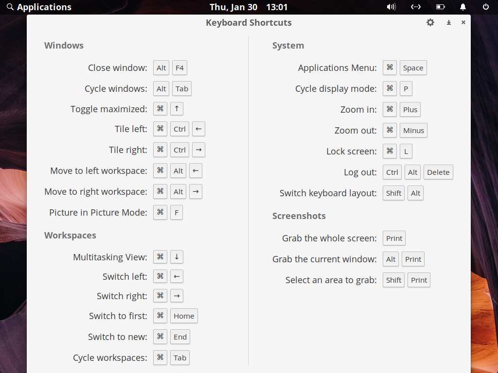

Learn More About elementary OS
elementary OS is a Linux distribution based on Ubuntu for non-technical users.
The core aim of elementary OS is to be a fast, open and more private replacement to macOS and Windows.
elementary OS offers you a gentle learning curve into the Linux experience. elementary OS is a great place to start for anyone who is interested in exploring FOSS.
The core aim of elementary OS is to be a fast, open and more private replacement to macOS and Windows.
elementary OS offers you a gentle learning curve into the Linux experience. elementary OS is a great place to start for anyone who is interested in exploring FOSS.
elementary OS AppCentre
AppCentre allows you to install and manage software for your elementary OS system.
The Home page allows you to browse, search for, and install new applications.
The Installed page allows you to update and uninstall applications from your elementary OS system.
For a more detailed explaination of AppCentre visit this section of the manual.
The Home page allows you to browse, search for, and install new applications.
The Installed page allows you to update and uninstall applications from your elementary OS system.
For a more detailed explaination of AppCentre visit this section of the manual.
elementary OS Terminal
Terminal is a Command Line Interface(CLI) which can be used to issue commands directly to your elementary OS system.
Using Terminal is optional for the majority of your elementary OS experience. To become familiar with it's basic functionality read this section of the manual.
Using Terminal is optional for the majority of your elementary OS experience. To become familiar with it's basic functionality read this section of the manual.
Super Key
In Linux the Super Key is the equivilent to the Windows Key in Windows or the Command key in macOS.
Shortcuts that combine Super Key with other keyboard keys will interact with elementary OS, not the application in focus.

Press Super Key by it self to see a list of useful shortcuts. Visit this section of the manual to view a list of Super Key shortcuts.
NOTE: Super Key can be remapped to any key on your keyboard and it's default functionality (show shortcut list) can also be changed.
Press Super Key by it self to see a list of useful shortcuts. Visit this section of the manual to view a list of Super Key shortcuts.
NOTE: Super Key can be remapped to any key on your keyboard and it's default functionality (show shortcut list) can also be changed.